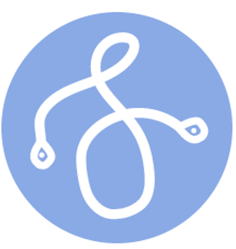
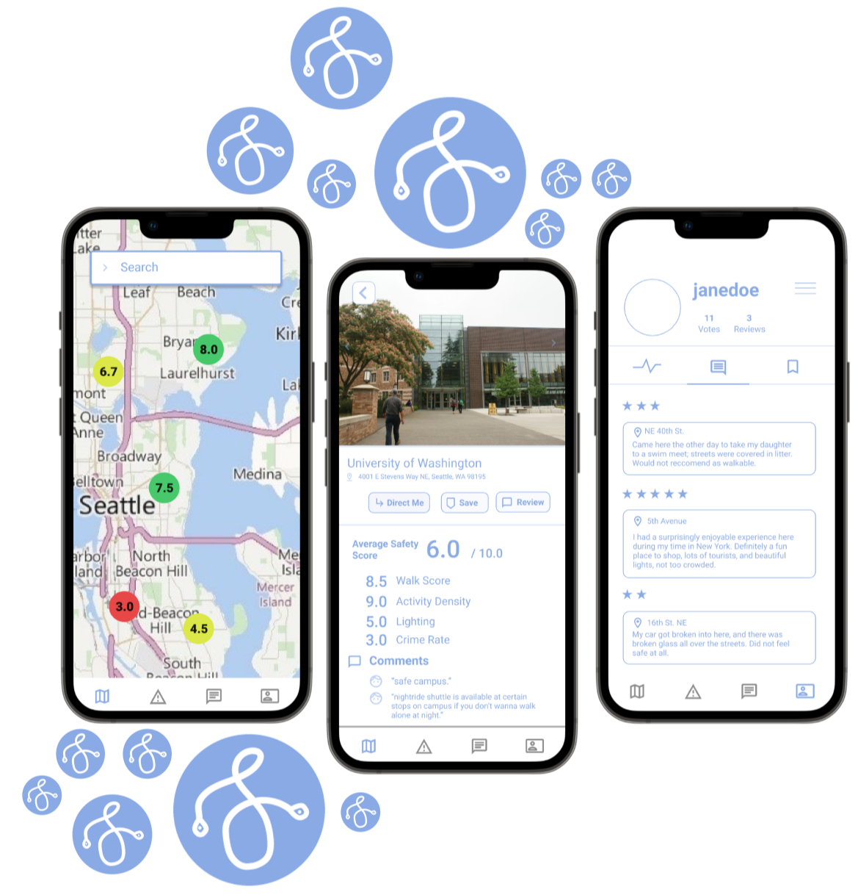

ChallengeGiven the theme of the Women in Informatics' Hackathon, "Driven by Difference," we were tasked with identifying a problem by interpreting this theme and developing a solution for it. |
Proposed SolutionA navigation app prototype, SafePath, that provides users information regarding route and location safety information based on a calculated safety score, while allowing users to stay informed in their communities through alerts and reviews. |
ImpactDesigned a high-fidelity prototype. Users can select a route based on a Safety Score calculated by SafePath. The purpose of SafePath is to provide a useful and relevant solution to help members of all backgrounds in our community. |
Role
User Research |
Tools
Figma |
In light of the #MeToo movement, the University of Chicago conducted a 2019 study on street harassment, finding that 71% of women and 28% of men experienced street harassment. Women disproportionately experience this, as do people of color. Taking this into account, our team proposed a navigational app that would allow users to make more informed decisions about their travel routes.
Each team member began by creating 1-2 hand-drawn, low-fidelity sketches of their assigned features of the prototype. I was tasked with the Alerts and Profile tabs.
After discussing and refining our sketches, we used Figma to immediately transform our sketches into high-fidelity wireframes. We collaborated on semantically connecting the pages to create a cohesive prototype.
I took on the task of designing a logo for our app. Drawing inspiration from the visual appearance of location pinpoints, and our emphasis on safety (S), below is the logo I designed using Adobe Illustrator:
We successfully created a navigation app prototype in under 12 hours. Given more time, we would have liked to better operationalize our Safety Score calculations.
Considering the fact that my three other team members and I did not know each other prior to the event, I did not expect to be able to work as effectively as we did. I learned how to be agile working in a team setting by being upfront about personal strengths when delegating tasks. I also learned how to produce quality results under time constraints.
Ivan Belikov
Nicholas Chun
Sharon Lin